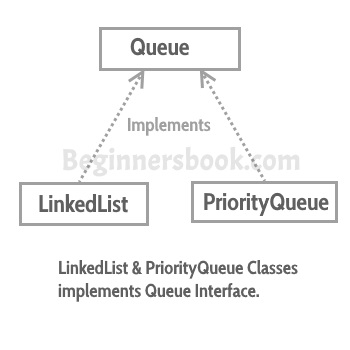

A Queue is designed in such a way so that the elements added to it are placed at the end of Queue and removed from the beginning of Queue. The concept here is similar to the queue we see in our daily life, for example, when a new iPhone launches we stand in a queue outside the apple store, whoever is added to the queue has to stand at the end of it and persons are served on the basis of FIFO (First In First Out), The one who gets the iPhone is removed from the beginning of the queue.

Queue interface in Java collections has two implementation: LinkedList and PriorityQueue, these two classes implements Queue interface.
Queue is an interface so we cannot instantiate it, rather we create instance of LinkedList or PriorityQueue and assign it to the Queue like this:
Queue q1 = new LinkedList(); Queue q2 = new PriorityQueue();
Java Queue Example
import java.util.*;
public class QueueExample1 {
public static void main(String[] args) {
/*
* We cannot create instance of a Queue as it is an
* interface, we can create instance of LinkedList or
* PriorityQueue and assign it to Queue
*/
Queue<String> q = new LinkedList<String>();
//Adding elements to the Queue
q.add("Rick");
q.add("Maggie");
q.add("Glenn");
q.add("Negan");
q.add("Daryl");
System.out.println("Elements in Queue:"+q);
/*
* We can remove element from Queue using remove() method,
* this would remove the first element from the Queue
*/
System.out.println("Removed element: "+q.remove());
/*
* element() method - this returns the head of the
* Queue. Head is the first element of Queue
*/
System.out.println("Head: "+q.element());
/*
* poll() method - this removes and returns the
* head of the Queue. Returns null if the Queue is empty
*/
System.out.println("poll(): "+q.poll());
/*
* peek() method - it works same as element() method,
* however it returns null if the Queue is empty
*/
System.out.println("peek(): "+q.peek());
//Again displaying the elements of Queue
System.out.println("Elements in Queue:"+q);
}
}
Output:
Elements in Queue:[Rick, Maggie, Glenn, Negan, Daryl] Removed element: Rick Head: Maggie poll(): Maggie peek(): Glenn Elements in Queue:[Glenn, Negan, Daryl]
In the above example, I have used Generics, this helps us to specify the type of the element that we are going to insert into the collection. As you can see I have specified the type of the Queue as String using Generics, so that it accepts only String elements. If you try to add the element of the type not specified then you will get compilation error, this brings the safety in our program and makes it less error prone.
Methods of Queue interface
boolean add(E e): This method adds the specified element at the end of Queue. Returns true if the the element is added successfully or false if the element is not added that basically happens when the Queue is at its max capacity and cannot take any more elements.
E element(): This method returns the head (the first element) of the Queue.
boolean offer(object): This is same as add() method.
E remove(): This method removes the head(first element) of the Queue and returns its value.
E poll(): This method is almost same as remove() method. The only difference between poll() and remove() is that poll() method returns null if the Queue is empty.
E peek(): This method is almost same as element() method. The only difference between peek() and element() is that peek() method returns null if the Queue is empty.
We have seen how a queue serves the requests on the basis of FIFO(First in FIrst out). What if we want to serve the request based on the priority rather than FIFO? This can be done with the help of PriorityQueue, which serves the request based on the priority, that we set using Comparator.
Leave a Reply